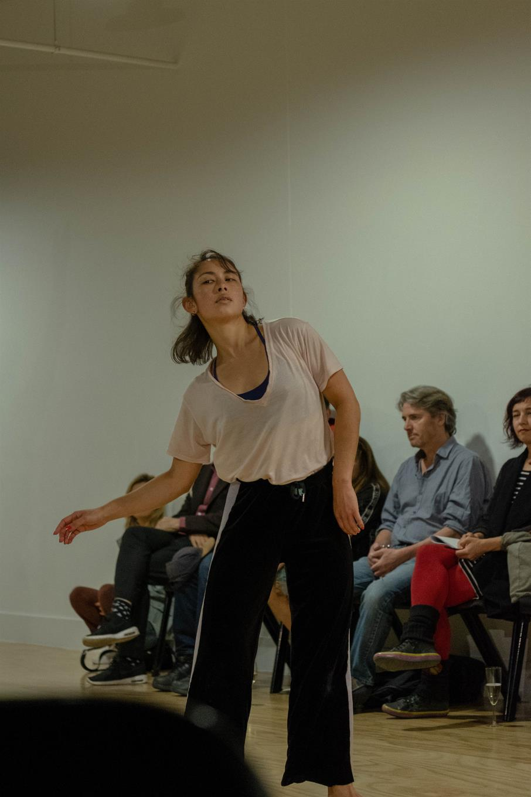
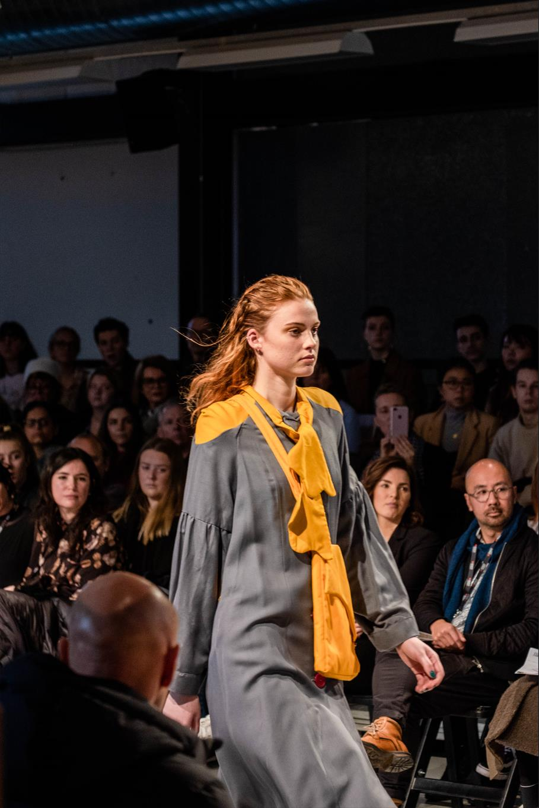
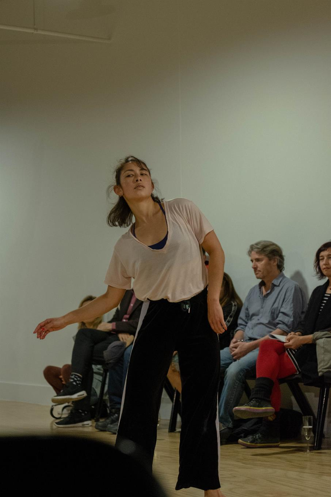
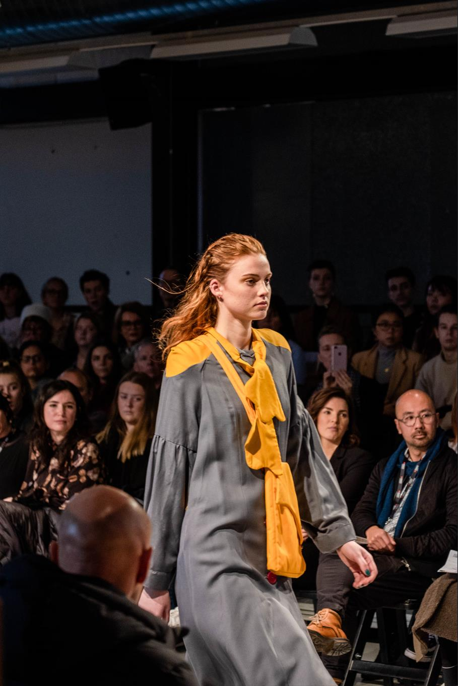
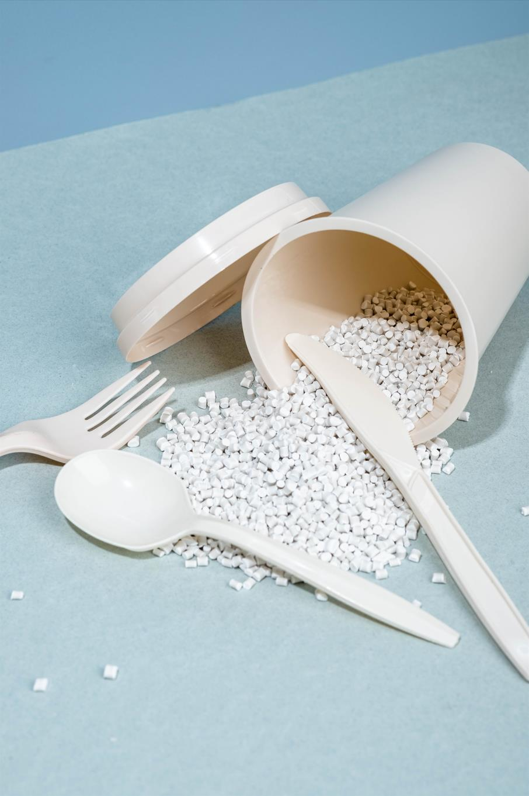
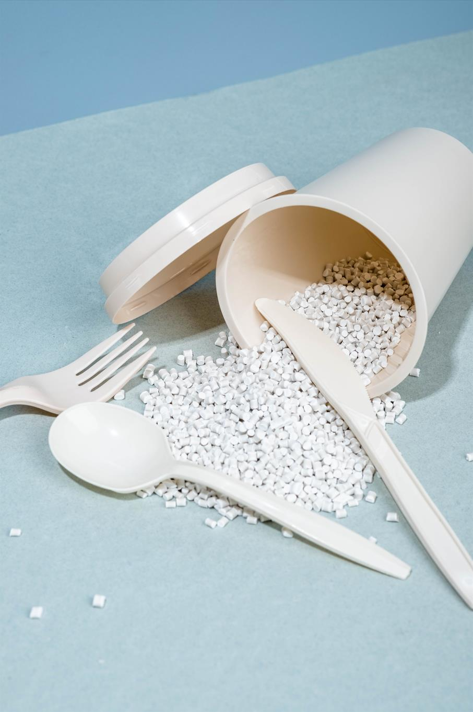

Portrait
The very essence of portraiture is the connection between the photographer and the subject. Being the listener and discovering the subject's story is what brings out the best in portraiture through the lens.
The very essence of portraiture is the connection between the photographer and the subject. Being the listener and discovering the subject's story is what brings out the best in portraiture through the lens.
 



Emotions are present in every scene. The wish is to evoke feelings in the viewer by recreating the moment from the photographs. Do you recall the moments in your life when you were filled with joy?
 

Do you have a funky and quirky world inside you too? I've taken my miniature world and little people into the creation of handmade accessories. Perhaps the best self-expression is through the products you create.